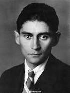

Franz Kafka
3 Temmuz 1883’te Avusturya-Macaristan İmparatorluğu’na bağlı Prag kentinde Aşkenaz Musevi
bir ailenin oğlu olarak dünyaya geldi. Ailesi Prag’da perakendecilik ve mağazacılık
işindeydi. Üç kız kardeşi olan Kafka, ilkokuldan itibaren Almanca eğitim gördü; liseyi
Kinský Sarayı yakınlarındaki Altstädter Deutsches Gymnasium’da bitirdi. 1901 yılında
Prag Karl Üniversitesi’nin Alman edebiyatı bölümüne girdi; daha sonra hukuk fakültesine
yazıldı. İleride yakın dostu ve editörü olacak Max Brod ile üniversite yıllarında tanıştı.
Üniversite yıllarında denemeler ve öyküler kaleme aldıysa da bunları tamamlamadı ve
yayımlamadı. Üniversiteden sonra bir yıl avukatlık yaptı; önce Trieste merkezli bir
sigorta şirketinde, 1908’de ise Bohemya devletine (daha sonra Çekoslovakya Cumhuriyeti’ne)
ait bir kamu sigorta şirketinde çalışmaya başladı. Edebiyatla yarı zamanlı ilgilenmek
durumundaydı. Hayatı ve edebiyatı babasının baskın karakterinden, kadınlarla olan inişli
çıkışlı ve kötü biten ilişkilerinden etkilendi. Kendisinden dört yaş küçük Felice Bauer
ile 1912’de tanıştı, 1914 ve 1916’da iki kez nişanlandılar ama evlenmediler. 1919 yılında
yirmi sekiz yaşında bir memur olan Julie Wohryzek ile kısa bir nişanlılığı oldu. Eserlerini
Çekçeye çevirecek olan gazeteci Milena Jesenská ile bu dönemde tanıştı. Jesenská Viyana’da
yaşadığı için ilişkileri uzun sürmedi. Kafka’nın hayatının son yılları uzun sağlık
izinleriyle sanatoryumlarda geçti; bazen aylarca senatoryumda kalıyor ve burada yazıyordu.
1922 yılında sigorta şirketinden sabit bir aylıkla emekli oldu ve bir dağ otelinde konakladı,
burada Şato’yu yazdı. Dora Diamant adlı bir Musevi ile tanıştı, bir süre Berlin’de yaşadılar.
Ancak kötüleşen sağlık durumu nedeniyle bu kez Viyana yakınlarında bir sanatoryuma yattı
ve burada 3 Haziran 1924 günü hayata gözlerini yumdu. 11 Haziran’da cenazesi Prag’da Yeni
Musevi Mezarlığı’na defnedildi. Öykülerinin çok küçük bir kısmı o yaşarken
yayımlanabilmiştir: Dönüşüm (1915), Hüküm (1916) Ceza Sömürgesi (1919) ve Bir Köy Hekimi
(1920). Max Brod’a vasiyeti, tüm yazdıklarının –yayımlananlar dahil– yok edilmesiydi;
ancak Brod’un buna içi el vermedi. Yazarın tamamlanmamış üç romanı olan Dava (1925),
Şato (1926) ve Amerika (1927) Max Brod’un editörlüğüyle yayımlandı. Diğer kısa öyküleri
de zaman içerisinde okurla buluştu. Eserleri bugün edebiyatta modernizmin yapıtaşlarından
sayılmaktadır.